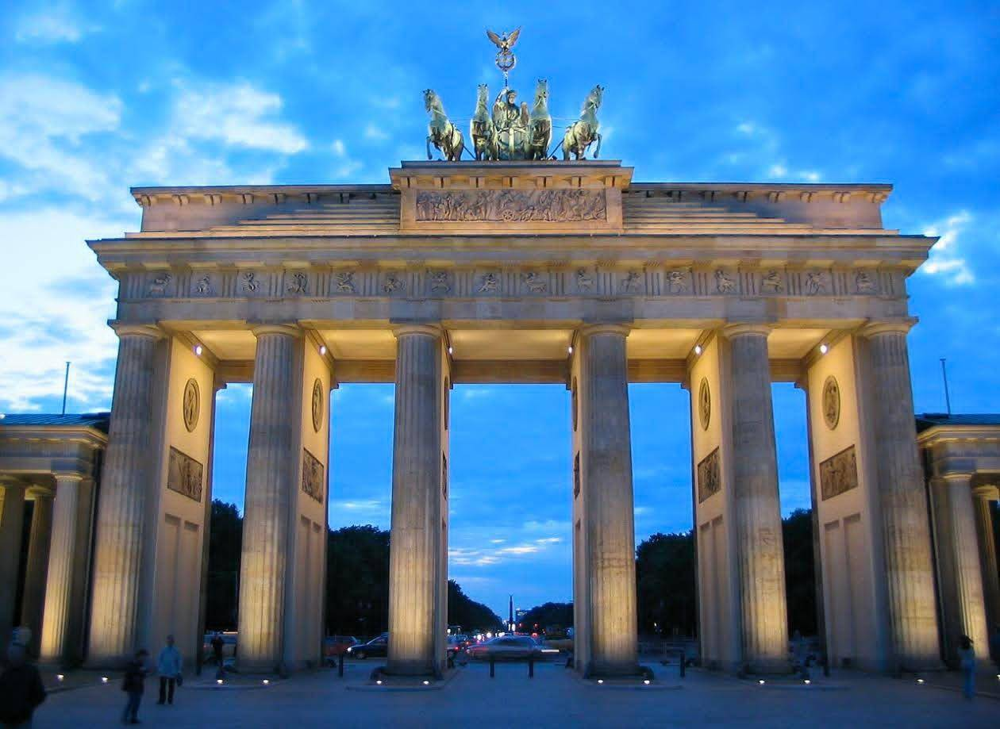

ประตูบรันเดินบวร์ค (Brandenburg Gate หรือ Brandenburger Tor) คือซุ้มประตูเมืองเก่าสถาปัตยกรรมนีโอคลาสสิกที่สำคัญที่สุดในใจกลางกรุงเบอร์ลิน ประเทศเยอรมนี สร้างขึ้นในช่วงปี พ.ศ. 2331-2334 Google Arts & Culture ปัจจุบันเป็นสัญลักษณ์ของเอกภาพและสันติภาพของเยอรมนี แทนที่อดีตที่เคยเป็นตัวแทนของการแบ่งแยกในยุคสงครามเย็นและช่วงสงครามโลกครั้งที่
รายละเอียดสำคัญของประตูบรันเดินบวร์ค:
ที่ตั้ง: ตั้งอยู่ระหว่างถนนอุนเทอร์ เดน ลินเดน (Unter den Linden) และสวนเทียร์การ์เทน (Tiergarten) บริเวณจัตุรัสพาริเซอร์ (Pariser Platz) Google Arts & Culture Introducing Berlin
สถาปัตยกรรม: ออกแบบโดยคาร์ล ก็อทท์ฮาร์ด แลงฮานส์ (Carl Gotthard Langhans) ได้รับแรงบันดาลใจจากประตูสู่มหาวิหารอะโครโพลิสในเอเธนส์ ประกอบด้วยเสาหินทรายสไตล์ดอริก 12 ต้น (ด้านละ 6 ต้น) รวมทั้งหมด 5 ช่องทางเดิน Introducing Berlin expedia
รูปปั้นควอดริกา (Quadriga): ด้านบนของประตูมีรูปปั้นเทพีแห่งชัยชนะ (Victoria) ขับรถม้าศึกที่ลากด้วยม้า 4 ตัว (Quadriga) ซึ่งถูกสร้างขึ้นใหม่ตามแบบดั้งเดิมหลังจากเสียหายในช่วงสงคราม Introducing Berlin
ความสำคัญทางประวัติศาสตร์:
อดีต: เคยเป็นส่วนหนึ่งของกำแพงเบอร์ลินที่แบ่งแยกเยอรมนีตะวันออกและตะวันตก เป็นพื้นที่ปิดตายในช่วงสงครามเย็น
ปัจจุบัน: เป็นสถานที่จัดงานเฉลิมฉลองระดับชาติ เช่น การฉลองปีใหม่ การแข่งขันฟุตบอลโลก และสัญลักษณ์แห่งความสามัคคีหลังจากกำแพงเบอร์ลินล่มสลาย